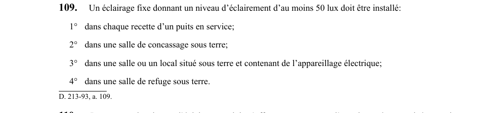

art-109-RSSM : éclairage fixe lieux souterrains spécifiques
Un article du wiki ⚖️ Recueil législatif
En bref
Un éclairage fixe donnant un niveau d'éclairement d'au moins 50 lux doit être installé dans chaque recette de puits en service. Cette obligation vise l'employeur.
- Dans toute salle ou local souterrain contenant de l'appareillage électrique.
- Niveau d'éclairement ≥ 50 lux dans : recette de puits en service.
🌐 LegisQuébec · 📄 PDF officiel
Texte officiel : capture du PDF

Toucher l'image pour l'agrandir🔗 Voir art. 109 RSSM dans le PDF (page 41)
Version : texte officiel du RSSM (RLRQ c. S-2.1, r. 14), à jour au 1er mai 2024 — Éditeur officiel du Québec
Voir aussi
- art. 107 : dispositifs contrôle débit air montage · obligation : les dispositifs de contrôle du débit d'air pour la ventilation d'un montage doivent être conçus pour assurer en tout temps au moins 5 changements d'air à l'heure au poste de travail et être placés à l'extérieur à moins de 10 m (32,8 pi) du montage.
- art. 108 : port lampe mineur sous terre · obligation : toute personne sous terre doit porter une lampe de mineur fixée au casque et rattachée au vêtement, au harnais ou à la ceinture, sauf aux endroits d'éclairage fixe où la lampe doit rester à portée de main.
- art. 110 : mesure niveau éclairement photomètre · obligation : la mesure du niveau d'éclairement doit s'effectuer au moyen d'un photomètre corrigé pour la lumière incidente.
- art. 111 : cabinets aisance niveaux souterrains · obligation : une mine souterraine doit être pourvue, à chaque niveau utilisé par des travailleurs comme accès à un chantier d'abattage ou à un avancement de voie, d'au moins un cabinet d'aisance par groupe d'au plus 30 travailleurs.
- ⚖️ Loi habilitante : LSST
- ↑ Index du bloc : Ventilation et qualité de l'air
Pages qui pointent ici (8)
- art-107-RSSM : dispositifs contrôle débit air montage Recueil législatif
- art-108-RSSM : port lampe mineur sous terre Recueil législatif
- art-110-RSSM : mesure niveau éclairement photomètre Recueil législatif
- art-111-RSSM : cabinets aisance niveaux souterrains Recueil législatif
- art-476-RSSM : paragraphes sous-paragraphe appareillage électrique installé Recueil législatif
- Doublon Recueil législatif
- Index par profil Recueil législatif
- RSSM : Ventilation et qualité de l'air (art. 100 à 130) Recueil législatif